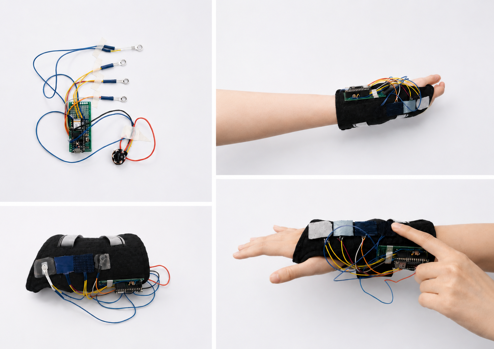

Overview
Most wearables track you. This one listens. Soothe Sleeve is a modular haptic garment designed for emotional grounding through touch — built from the observation that people unconsciously rub sleeves, blankets, and familiar textures when anxious, and the conviction that wearable technology should amplify that instinct, not replace it with a notification.
"The project reimagines wearables not as tools for tracking and efficiency, but as intimate objects that support emotional care and grounding."
Observation & Insight
The project began with a personal observation: people, including myself, unconsciously rely on small tactile habits — like touching sleeves or soft fabrics — to cope with stress and anxiety. These repetitive touch behaviors function as a form of embodied emotional regulation, even without conscious awareness.
The design question followed directly: How can wearable technology support self-soothing through touch, rather than interrupting it with notifications? The answer: build a garment that responds when you touch it — turning a habitual gesture into a designed system of care.

Design opportunity mapping: the intersection of "What if touch could respond back?" and "What if touch could become a meaningful interface?" — Touch as Emotional Interface.
The Device
The sleeve is designed to be worn on the inner forearm — the area richest in C-tactile afferents, with strong connections to the insular cortex, making it ideal for affective touch and emotional resonance. The primary placement is intentional: this is where the body is most attuned to gentle, meaningful contact.

System flow: user interaction → pressure sensor captures → system interprets → haptic output via textile feedback. The inner forearm placement is chosen for its density of C-tactile afferents — nerve fibers specialized for gentle, affective touch.
Why Vibration
Texture creates passive comfort; vibration adds active response. Familiar fabrics — knitted weaves, blankets, soft clothing — create emotional grounding through recognition. The sleeve combines both: interchangeable textile patches (chosen by the user for personal comfort) with responsive vibration (triggered by detected touch pressure).
Vibration adds rhythm, response, and reassurance. A slow pulse can feel like gentle comfort, while repeated patterns can interrupt anxious thought loops and support self-soothing. Instead of replacing the textile, technology extends it.

Hardware: vibration motor (haptic feedback, different rhythms and intensities), Arduino Nano 33 IoT (input/output processing, lightweight for all-day wear), rechargeable battery. Four modular textile patches: Calm (slow pulse), Ground (heartbeat), Ritual (steady rhythm), Root (strong pulse).
Prototype
The physical prototype combines fabric pattern cutting, soldered sensor arrays, and custom Arduino code into a wearable that responds in real time to touch pressure. The modular textile patch system allows users to swap textures — each triggering a different vibration profile. Multiple prototype iterations refined both the ergonomic fit and the vibration timing curves.

Final prototype: the sleeve on the inner forearm, showing the modular patch placement and the pressure-sensing gesture interaction. Touch becomes both input and experience.
Reflection
Soothe Sleeve was not only a wearable prototype, but also the starting point of my research interest in embodied AI interaction. It raised questions that extend beyond this project: how technology can become emotionally supportive through touch, how bodily signals can be translated into adaptive multisensory feedback, and how wearable systems can cultivate long-term relationships with users rather than momentary interactions. These questions continue to guide my current research direction.